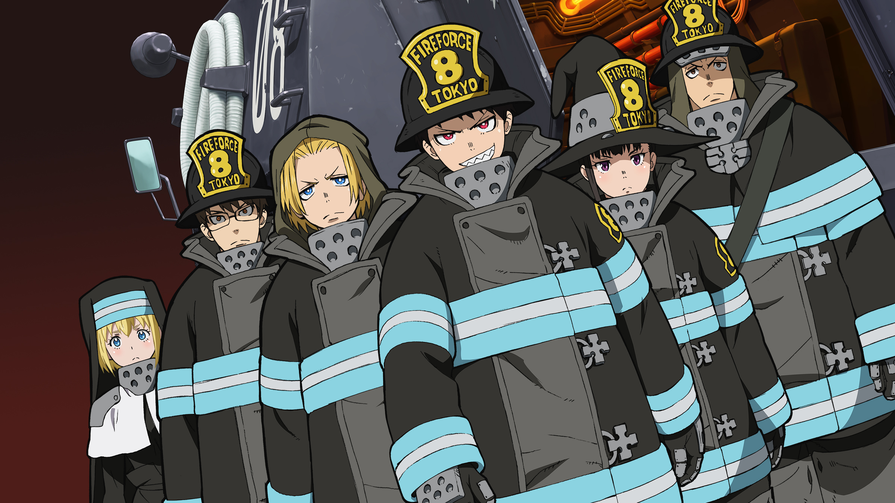

Shinra's Info
Shinra can discharge flames from his feet and move insanely fast. He is apart of Special Fire Force Company 8. His nickname is the devil.
Ready to put infernals to rest!
Shinra's Characteristics
- He is a 3rd generation/4th generation pyrokinetic
- He smiles when he's tense
- He is determined to become a hero
Company 8
Company 8 is a talented group within the fire force. Their goal is to investigate other companies of the fire force and solve the mystery behind spontaneous human combustion. Click the links to learn each member's abilities: